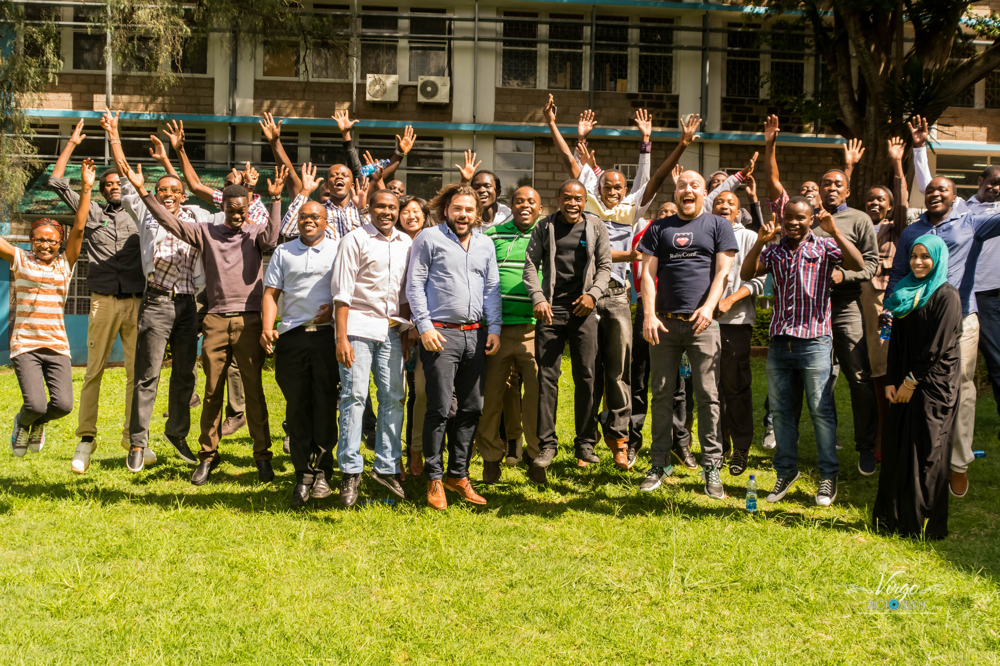

On the 12th August 2021 leading Ruby developers will come together to share, inspire and learn.
You will need a recent internet browser.
This is an inclusive conference that is welcoming and accessible to as many people as possible.
| Time (UTC+2) | Speaker | Title | Speaker Country |
|---|---|---|---|
| 15:00 | Bernard Banta | Welcome | Kenya |
| 15:15 | Kalebu Jordan | MRuby | Tanzania |
| 15:45 | Promise Chukwuenyem | Seamless Ruby Application Deployment using Capistrano | Nigeria |
| 16:15 | Michael Kimathi | Break | Kenya |
| 16:45 | Marylene Sawyer | Building Modern Applications in Ruby: Fast, Efficient, Versatile, and Cost-Effective | South Africa |
| 17:15 | Brooke Kuhlmann | Code Reviews | USA |
| 17:45 | Raphael Noriode | Break | Nigeria |
| 18:15 | Clemence Sedem | Reactive Rails | Ghana |
| 18:45 | Raphael Noriode | Closing | Nigeria |
Promise Chukwuenyem is a DevOps and Ruby on Rails Engineer at Venture Garden Group. He loves automating software delivery/deployment processes and finds joy building solutions using Ruby on Rails. He is a very active contributor on StackOverflow and often shares his knowledge in writing on Medium. He also tweets a lot about his interests on Twitter.
Mrs. Marylene Sawyer is a wife and mother who enjoys solving problems and building interesting solutions through coding whenever she finds time. Mrs. Sawyer is a professional full-stack Software Engineer currently based in South Africa. She recently completed the Software Development Program at Microverse, a school for remote developers. Marylene also holds a BSc in Computer Science from the University of the People, Pasadena, California.
Clemence Sedem Agozi is a software engineer and cyber security researcher. He is currently working at getINNOtized GmbH as an associate software engineer.
African Ruby Mini-Conference 2021 is made possible through the generous support of our sponsors. Please give them your support too.
The African Ruby Mini-Conference is run under the auspices of Nairuby. You can view our code of conduct. These rules must be followed by all attendees at all conference-related events.
